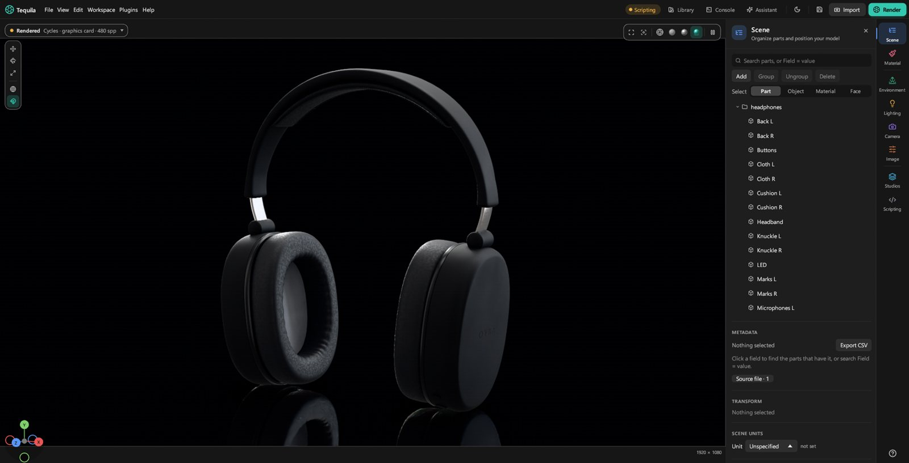
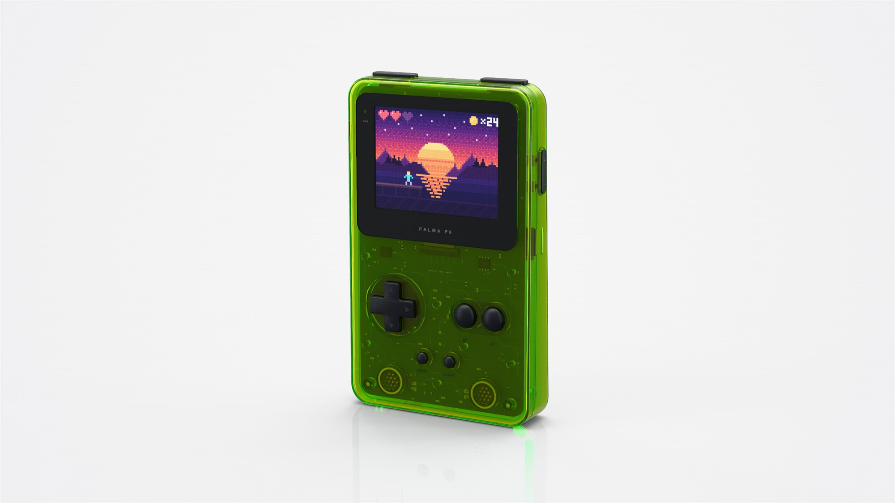
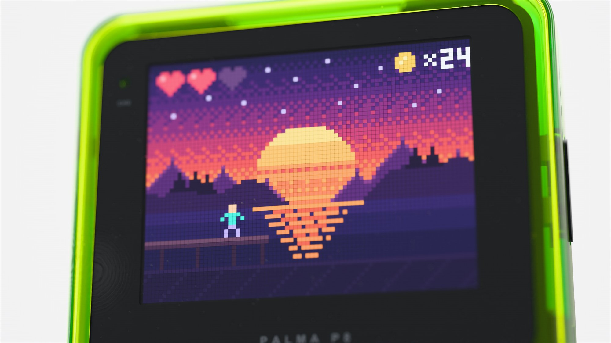
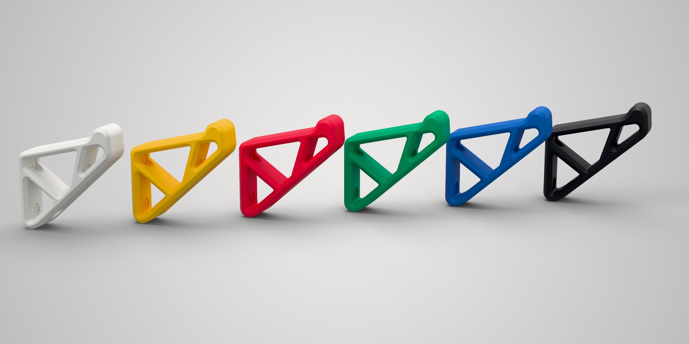
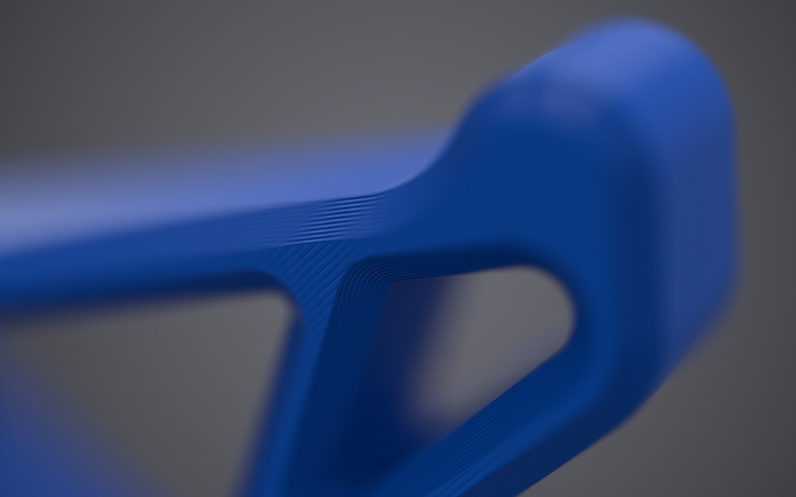
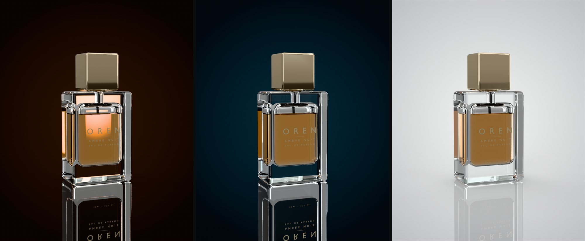
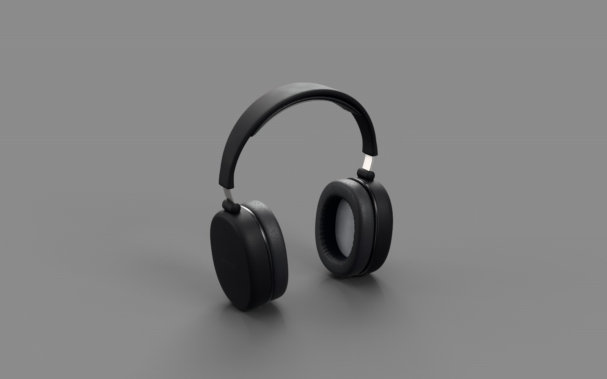
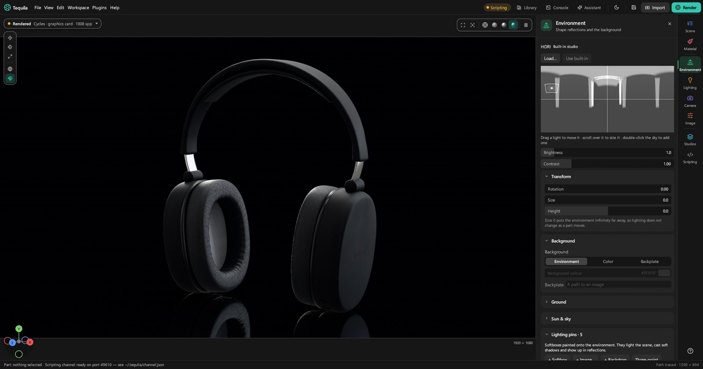
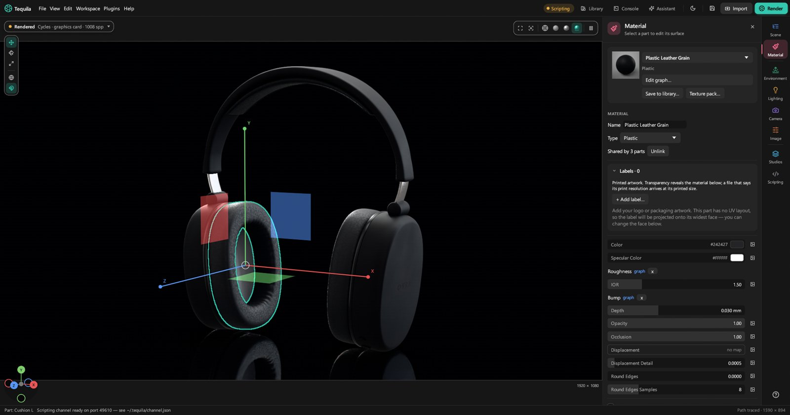

Features
Everything it does.
Tequila follows the workflow of a commercial product renderer: model in, materials on, lights up, picture out. Here is all of it.
Import
Bring in what your CAD or 3D software makes, at full size, with its structure intact.


- CAD: STEP through OpenCASCADE and IGES, with assemblies, names, colours, units, attributes and layers. Show or hide a layer at once.
- 3D: glTF and GLB, FBX, OBJ (with ZBrush polypaint), STL, 3MF, PLY, USD (
.usda,.usdc,.usdz) and IFC building models. - Rhino:
.3dmfiles from Rhino 5 to 8, with their layers as the scene tree, materials and textures, polysurfaces, SubD and blocks. - Blender:
.blendfiles, read by the Blender on your computer: modifiers applied, collections as the scene tree, instances, cameras, and materials node for node, procedural textures and packed images included. - Very large models. Re-tessellate a CAD part finer or coarser, and re-import a changed model without losing your materials, labels or names.
- Live from other apps: send models from Blender (live), SolidWorks and ZBrush.
- KeyShot scenes: open
.kspand.bipfiles with their parts, materials, labels, environments, cameras and model sets.
Materials





- A library of over 300 procedural materials: plastics with mould textures, anodised, brushed and polished metals, car paint with flakes, glass, gems, liquids with bubbles, wood, stone, leather, ceramics, fabrics and 3D-print filaments.
- Real fibres: a material's Fuzz grows fibres for felt, velvet, fur and tennis-ball fuzz, a texture colours each fibre where it grows, and both renderers draw them.
- Suedes and footwear: roughout and fine suedes, Faux Fur Camel, jersey lining, nylon taffeta, outsole rubber, laces, bonded thread and webbing.
- Adobe Substance materials (
.sbsar,.sbs) with their settings; with Adobe's Substance tools installed, the textures render again as you change them. - A node editor for your own materials, with procedural patterns, and recipes that an AI app can write for you.
- Labels and decals, placed and sized in millimetres.
- Texture packs turned into materials in one go, and KeyShot material packages (
.kmp). - Colourways and variants, and multi-materials to switch between.
- Texture formats: PNG, JPEG, EXR, HDR, TGA, WebP, TIFF, BMP, SVG, GIF, DDS, JPEG XL and Photoshop files.

Lighting

- HDRI environments, and an HDRI editor with pins for placing highlights.
- Sun and sky, and area, spot, point and IES lights.
- Light groups you can rebalance after the render is done.
- Studios: lighting, camera and look saved by name, and a set of views to render in one go.
- Floors: shadow catchers, contact shadows, and mirror reflections of the product alone.
- Caustics off, by photons, or by working out each lamp's path through smooth glass.


Rendering

- Two renderers. Cycles, Blender's production path tracer, on NVIDIA and AMD graphics cards (every card at once) or the processor. And Tequila's own path tracer, which renders on any computer.
- The viewport renders the final picture live, denoised as it goes, with Wireframe, Solid and Material Preview views beside it.
- Spectral rendering in Tequila's own renderer, for the fire in gems and dispersive glass.
- A render queue, region renders, render layers and passes, Cryptomatte, and EXR, PNG and JPEG output.
- Batch renders of every configuration of a product, named by its choices.
- Network rendering across the computers in the room.
- Render wireframe: the model's edges drawn at any size in a second or two, as a technical drawing or a line drawing.


UV editor and labels

- Unwrap a part in a click; faces come apart at sharp edges, and curved surfaces in a few even pieces.
- Labels: drag, scale and turn them, fit them to a face, or set their width in millimetres.
- A workspace: snapping, rulers, guides saved with each part, a grid, a measure tool, a Transform panel, Align, and layers with locking.
- Islands: move, turn, scale and flip; cut and stitch seams; pin and lay out flat again; pack, straighten and even out the size.
- Shape tools: least-stretch unwrap, straight lines, grids, rectangles and circles, relax, weld, and cut by angle.
- Symmetry and arranging: make one side mirror the other, a 2D cursor, sort, stack repeated pieces, and lay islands out as the part looks.
- See it on the part: texel density, a stretch heatmap, a checker in the viewport, and padding at a texture size. Export the layout as SVG or PNG.

Camera and look

- A photographic camera with focal length, depth of field, lens shift and orthographic views. Several cameras per scene.
- AgX, ACES and PBR Neutral tone mapping, with exposure and white balance.
- ACES colour end to end through OpenColorIO, with every ACES 1.3 output transform and the common camera log curves.
Sharing

- Web export: a page with the product in live 3D, or pre-rendered.
- AR: export a USDZ that an iPhone, iPad or Apple Vision Pro opens in AR, at real size, standing on the ground.
- A spin viewer, and glTF and USD export.
- Presentation mode, full screen.
- Cutaways and measurements, model sets and a configurator.


Scripting and AI

- Connect an AI app in one click: Claude, Cursor, VS Code (GitHub Copilot), Codex, Gemini CLI, Windsurf, LM Studio, or any other app that speaks MCP. It can set up materials, lighting and renders, make materials from a description, and write plugins.
- A built-in Assistant for OpenAI, Claude, Gemini, OpenRouter, Mistral, DeepSeek, xAI, Groq or a local model.
- Python scripting and plugins, a command-line renderer, and a Blender live link.
- A 3Dconnexion SpaceMouse to turn, pan and zoom the view.
- Every edit is an undoable command with a name, so scripts and AI apps can do anything the buttons do. See Scripting.
Platforms
- Windows 10 or 11, 64-bit.
- Mac with Apple silicon, and Intel Macs on macOS 12 or newer (with Tequila's own renderer).
- Linux, 64-bit, glibc 2.35 or newer.
- Test this computer (Help menu) renders with every engine and graphics card it finds and gives a short report to share.
- NVIDIA (GTX 900 series or newer) and AMD (RX 5000 series or newer) cards render with Cycles; any other computer renders on the processor.
Beyond turntables, animation isn't part of Tequila yet; it's on the Roadmap.